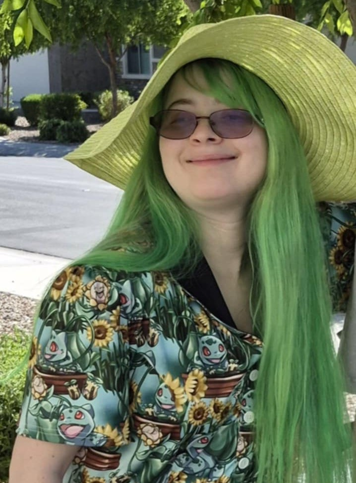

Lily Meadows
Hello! I'm a recent graduate currently studying Media Arts and Sciences (Extended Reality Technologies) which presents many ways to tell a story and learn about animation in different media.
Character Design has played a big part of my life and understanding multimedia will allow me to give my characters a setting and tell stories that make them stand out.
My goal is to use my world-building skills and create visual storytelling. I am incredibly passionate about the process of animation from creating concept art and design to final animations. I have developed a strong understanding of concept designs and seeing what works and what doesn't.
I also have a minor in Film and Media Production. I do have some knowledge when it comes to film production, which also helps with concept ideas for character designs.
If you'd like to hire me, email me or message me on any of my socials.